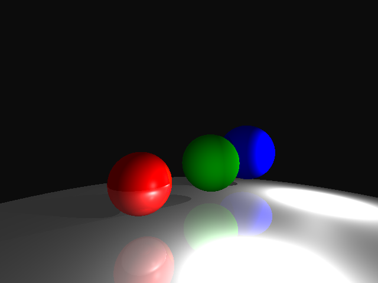

CSCI 5607 Project 3A:
Ray Tracing Part 1
In this project, I implemented additional image manipulation routines. Build the executable with the provided Makefile. To reproduce the result images included below, run the included "run" program. Here's an example:
$ cd src && make ; cd -
$ ./raytrace SphereExamples/spheres2.txt
In my implementation, I encapsulated most concepts in unique structs or classes, which really slowed down my development in the beginning but made my life much easier when it came to debugging or refactoring. I also borrowed a tree-type data structure and used it as a dependency in my rays to keep track of collisions in a scene. I was really amazed at how large of an optimization this was; it basically meant that if there were no rays intersecting with an object, it would not be rendered. This really came in handy when I had an issue with my camera not setting the up direction correctly after figuring out the right direction by taking the cross product of the inferred right and forward directions. I had used a similar data structure (quadtree of axis-aligned bounding boxes) in a personal project before to detect hitbox/hurtbox collisions, so I had some familiarity with the concepts.
Source code
- Features implemented:
- Scenes:
- Camera placement, film resolution, aspect ratio
- User specified background colors
- BMP output
- Primitives:
- Spheres
- Ambient lights
- Point light sources
- Shadows (see first, second, third, fifth image)
- Multiple light sources (see third image)
- Ambient lights
- Sampling:
- Basic sampling
- Materials:
- Color & specularity (Phong Lighting Model)
- Reflection (see second & third image)
